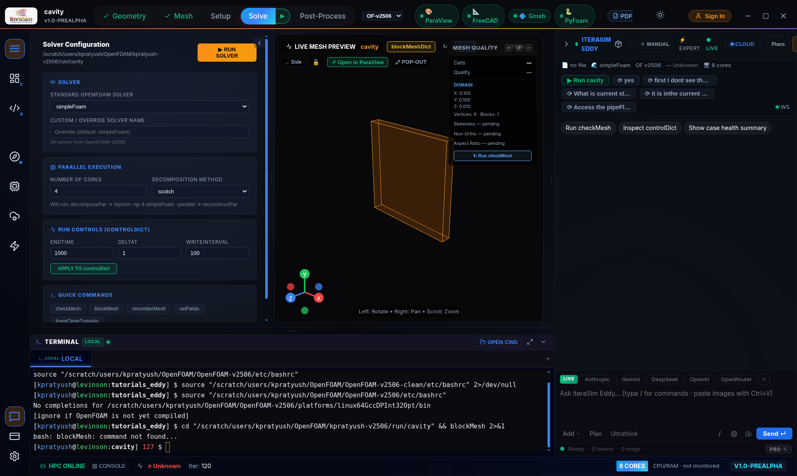

6 Troubleshooting¶
The most common gotchas, and how to fix them.
The app window is blank or black¶
Usually a GPU driver issue on older Intel or Nvidia cards. Launch Eddy with software rendering:
Eddy doesn't appear in my applications menu after first launch¶
Some desktop environments (older Xfce, i3, sway) don't auto-refresh their app cache. Force a refresh:
update-desktop-database ~/.local/share/applications
gtk-update-icon-cache -t ~/.local/share/icons/hicolor 2>/dev/null || true
Log out and back in if it still doesn't appear. On GNOME and KDE Plasma the menu updates within a few seconds of first launch — no action needed.
I moved the AppImage and now the menu icon does nothing¶
The .desktop entry still points at the old location. Launch the AppImage once from its new folder — Eddy detects the move and rewrites the menu entry automatically.
"OpenFOAM: not found" in the status bar¶
Your OpenFOAM install isn't on the login-shell PATH. Two fixes:
- Install via package manager (see section 1.4).
- Or edit your ~/.bashrc to source the OpenFOAM etc/bashrc — Eddy detects any version whose bashrc is sourced.
Copilot says "No API key configured" — but I'm on Pro¶
This message is misleading, and it catches Pro users in particular. It is usually not about your API key at all. It means Eddy's local backend is not running.
Look at the status bar at the bottom of the window. If it reads ○ Offline (grey) rather than ● Ready (green), that is the real problem. The LOCAL badge instead of LIVE says the same thing.
Why a Pro subscriber sees it. Your Pro plan's managed model access is
served through the local backend — a small Python service Eddy starts for you
on 127.0.0.1:8000. When that service isn't running, Eddy falls back to a
second path: talking to a model provider directly using a key stored on your
machine. If you never set a personal key — and Pro users have no reason to —
that fallback has nothing to use, and reports the missing key rather than the
missing backend. Your subscription and token balance are untouched; the status
bar still shows PRO and your remaining tokens.
The fix, in order:
- Click ⟳ Start Backend in the message. Give it five to ten seconds. The status bar should flip to ● Ready and the badge to LIVE. Re-send your question.
-
If it stays Offline, check whether something else holds port 8000:
A healthy backend answers the first command. If a different program owns the port, close it and press Start Backend again.
-
Still Offline — restart Eddy completely. The backend is started automatically at launch, so a clean start usually recovers it.
- Check AI Extensions (the lightning-bolt icon). The panel has its own ⟳ Restart Backend button and shows the last startup error, which tells you why it failed rather than just that it did.
Common reasons the backend isn't up:
- First launch after install — Python dependencies are still unpacking. Wait a minute and press Start Backend.
- Port 8000 already in use — another dev server, or a previous Eddy that didn't exit cleanly.
- A second Eddy is already running — only one instance can hold the port.
- Firewall or endpoint security blocking loopback connections. The backend
is local-only and never listens on an external interface; allow
127.0.0.1:8000.
Working deliberately offline? Then the message means what it says. Open AI Extensions, add a key for Google Gemini, Anthropic, OpenAI or OpenRouter, or point Eddy at a local Ollama model. That path bypasses the backend entirely and works with no network at all. Keys are stored in your OS keyring, never in plaintext and never on our servers.
Which path am I on?
● Ready / LIVE — the backend is serving requests. Pro users are on managed models and metered tokens. ○ Offline / LOCAL — the backend is down. Eddy uses a personal key if you have one, and the local CFD expert for solver questions if you don't.
Tip
Everything that is not the copilot keeps working while the backend is offline: the Case Builder, blockMesh, snappyHexMesh, Gmsh, running the solver and the ParaView handoff are all local. An Offline badge costs you the AI, not the simulation.
Copilot says "monthly token cap reached"¶
You've used all 50,000 free tokens for this calendar month. Either wait for the 1st of next month, or upgrade to Pro (section 5).
"Billing is not configured" when clicking Upgrade¶
This means the deployment hasn't wired Stripe yet. If you're the administrator, see BUILD_LINUX.md in the source tree. If you're an end user, email info@iterasim.in — we'll send you a one-off invoice.
Solver runs but residuals aren't plotting¶
Eddy needs to see the solver's stdout to plot residuals. If you launched the solver from an external terminal instead of the in-app Run button, the plot panel will stay empty. Use Run in the toolbar.
HPC cluster: "Permission denied (publickey)"¶
Your SSH key isn't on the cluster. Either:
- Copy your key manually: ssh-copy-id -i ~/.ssh/id_ed25519.pub user@cluster.example.com.
- Or set the Password field in the SSH profile — Eddy will use it via sshpass.
A command fails with "blockMesh: command not found"¶
The terminal is sourcing an OpenFOAM tree that has not been compiled. This happens when more than one OpenFOAM lives on the machine — typically a source checkout alongside a built install — and the version selector in the title bar is pointing at the wrong one.


Pick the built installation from the OpenFOAM dropdown in the title bar. To see which of your trees is actually built, check for a solver binary:
The case dies instantly with a dictionary error¶
OpenFOAM is strict about which keywords a solver expects. The three you are most likely to meet, and what each means:
- Entry 'PISO' not found — the pressure–velocity block does not match the solver family. icoFoam and pisoFoam read a PISO block, pimpleFoam and its relatives a PIMPLE block, and the steady solvers a SIMPLE block.
- Unable to set reference cell for field p — a fully enclosed domain, where every boundary is a wall, has no pressure datum. Add pRefCell 0; pRefValue 0; to that block.
- writeInterval < 1 for writeControl timeStep — a steady run counts writes in iterations, so the interval must be a whole number. Fractional intervals belong to transient runs using writeControl runTime.
Note
Cases written by the Case Builder already carry all three settings. You will only hit these when editing dictionaries by hand or importing a case from elsewhere.
The solver starts, then diverges¶
Work through it in this order — it is almost always the first item:
- Courant number. Keep it below 1, and nearer 0.3 for transient runs. Halve the time step and see whether the blow-up moves.
- Mesh quality. Run checkMesh; high non-orthogonality or skewness needs matching corrections in fvSchemes.
- Numerics. Drop the preset to robust (first-order upwind). If that converges, the problem is scheme choice, not the case setup.
- Boundary conditions. An over-constrained pressure field — for instance a fixed value at both inlet and outlet — will not converge.
Copilot replied instantly with a case summary instead of answering¶
A reply that arrives in under a second did not come from the AI. It came from a built-in shortcut, usually a case lookup triggered by a keyword in your message. Rephrase it as a question — start with which, what or how — and ask again. Questions get answered; instructions such as "set up a cavity case" deliberately drive the case pipeline instead.
Known limitations in this release¶
Worth knowing before you plan work around them:
- Compressible and buoyant cases. rhoSimpleFoam, rhoPimpleFoam, buoyantSimpleFoam and buoyantPimpleFoam appear in the Case Builder but it does not yet write constant/thermophysicalProperties, so those cases need that file added by hand before they will run.
- Free-form solver generation. Asking Copilot to add an arbitrary equation to any solver is not yet reliable — the generated C++ can reference OpenFOAM API that does not exist. The built-in recipes, such as adding passive temperature transport to simpleFoam, do compile dependably.
- Copilot advises, it does not compute. Ask it to run an analysis over your files — a mesh-convergence study, say — and you get a method and a script, not computed numbers. Run the script yourself.
- Knowledge retrieval is offline. Answers come from the language model's own knowledge rather than an indexed OpenFOAM corpus, so verify specific API details against the OpenFOAM source.